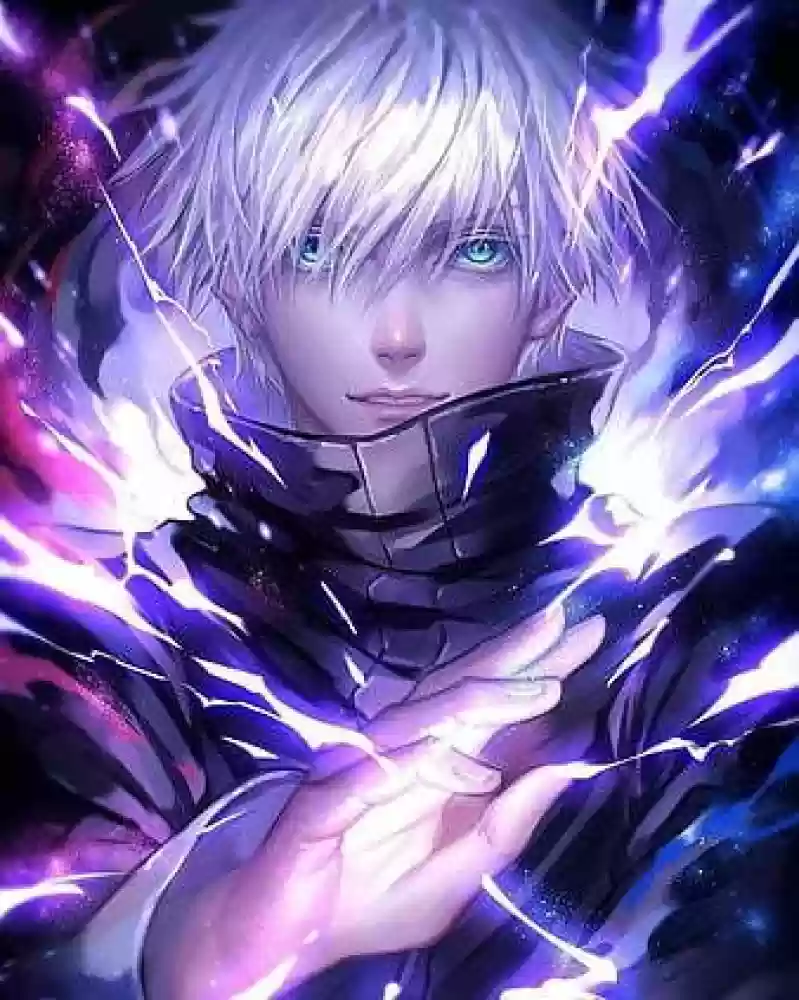
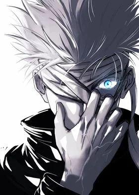

Satoru Gojo
Satoru Gojo

He was first introduced in Akutami's short series Tokyo Metropolitan Curse Technical School as the mentor of the cursed teenager Yuta Okkotsu at Tokyo Prefectural Jujutsu High School. This miniseries became the prequel Jujutsu Kaisen 0 of Jujutsu Kaisen. In Jujutsu Kaisen, Gojo takes the same role but mentors the student Yuji Itadori who suffers a similar Curse, helping him become stronger while protecting other characters in the series.

Light Blue

Tokyo Jujutso High
the student Yuji Itadori who suffers a similar Curse.